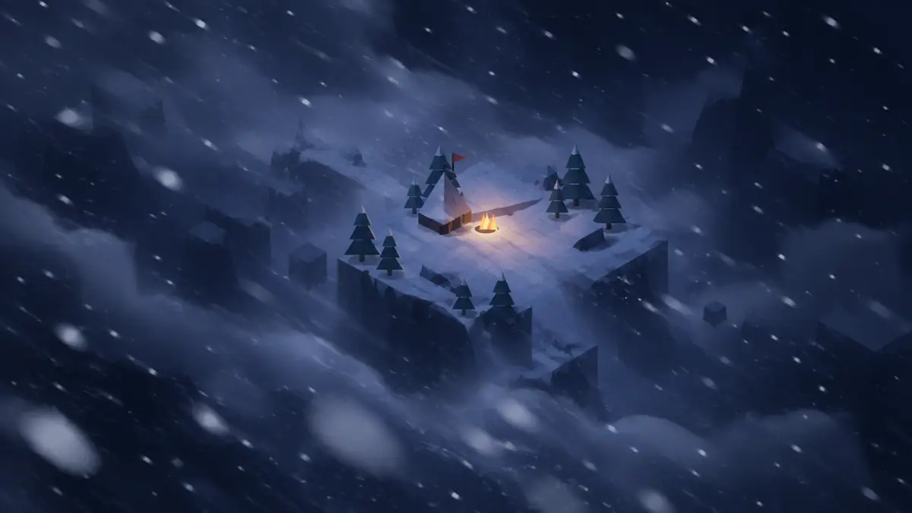
The Storm Shore
One light remains.
Snow takes the shore. Beyond its glow, the island disappears into the Veil.
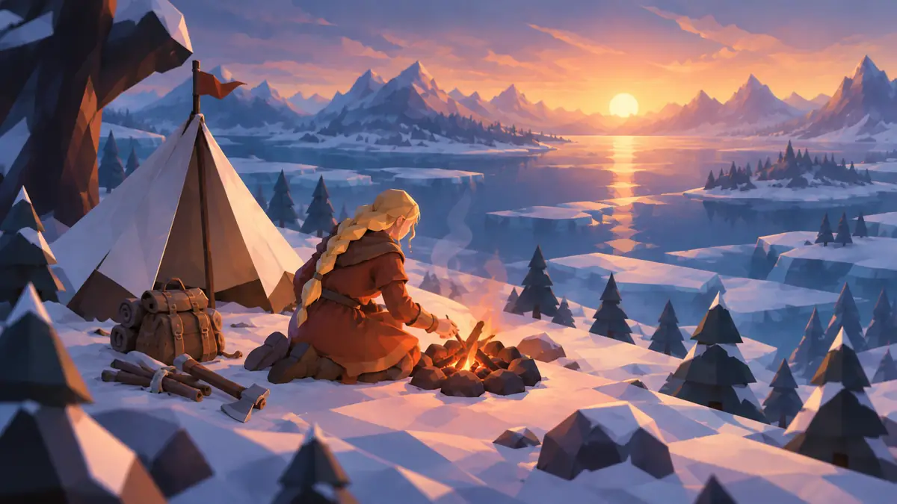
An Ironveil story · one winter, one survivor
One ember holds the island between darkness and dawn. Beyond the storm, a new path waits.

The Storm Shore
Snow takes the shore. Beyond its glow, the island disappears into the Veil.
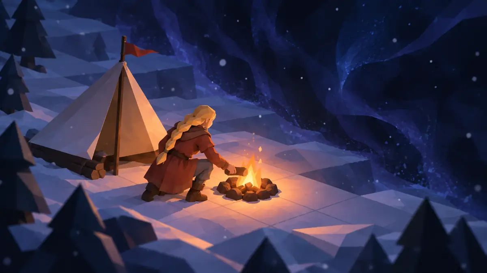
Keep the Fire
The storm presses close. The survivor has no armor and no tools.
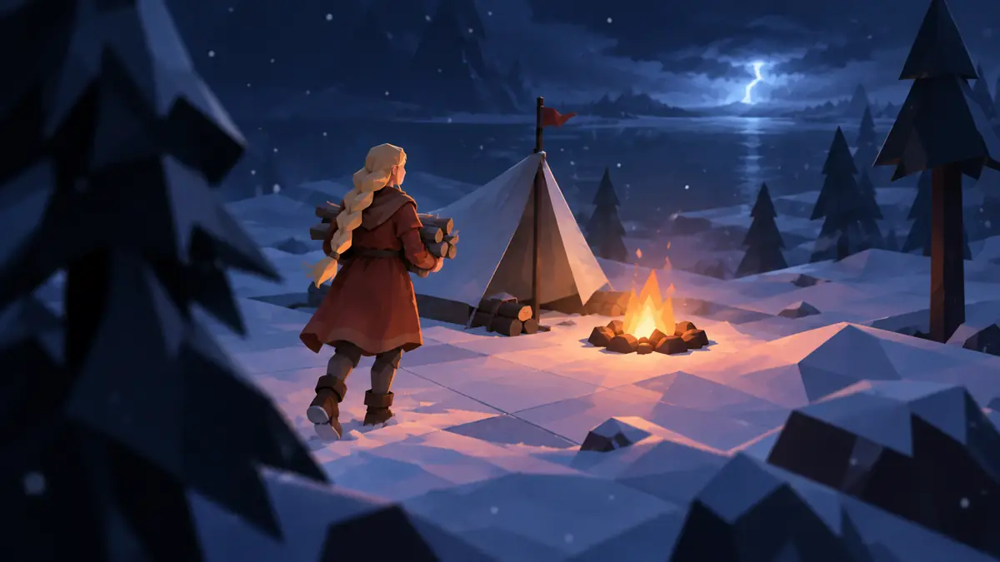
Gather
A first journey into the snow returns with wood for the fire.
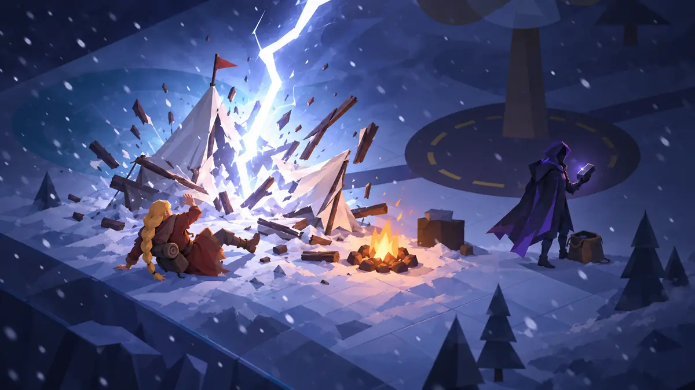
The Storm's Price
Lightning breaks the camp. In the same flash, something is taken from the pack.
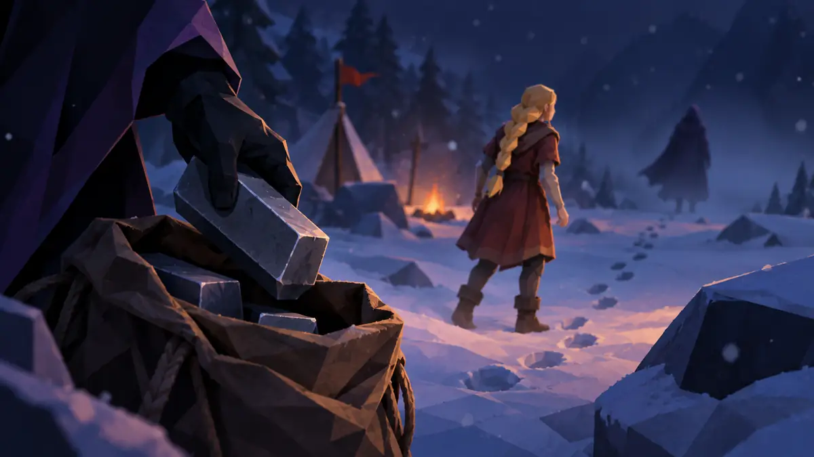
Rival Unseen
A shadow vanishes into the Veil. The survivor turns toward the silence.
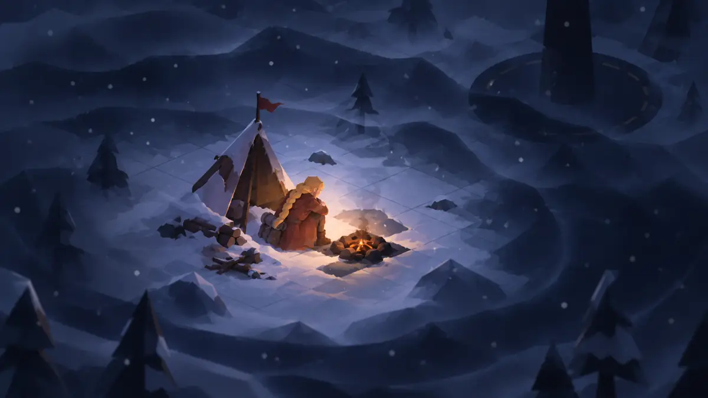
Embers
Winter answers every turn. The camp is down to its last warmth.
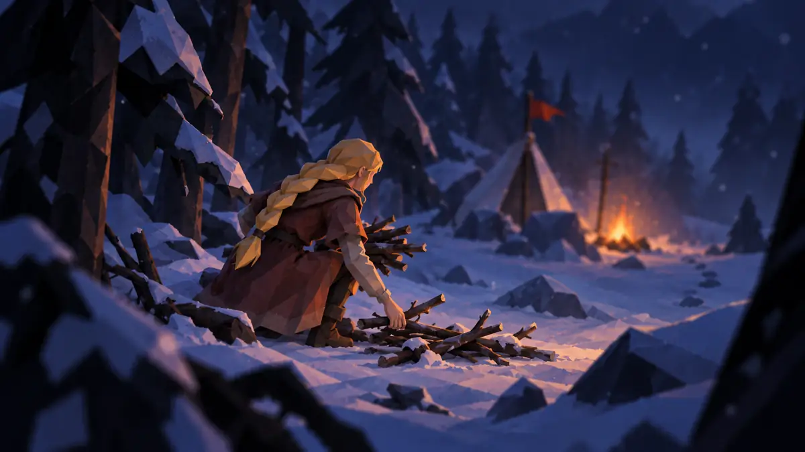
Gather
One resource can become one more night.
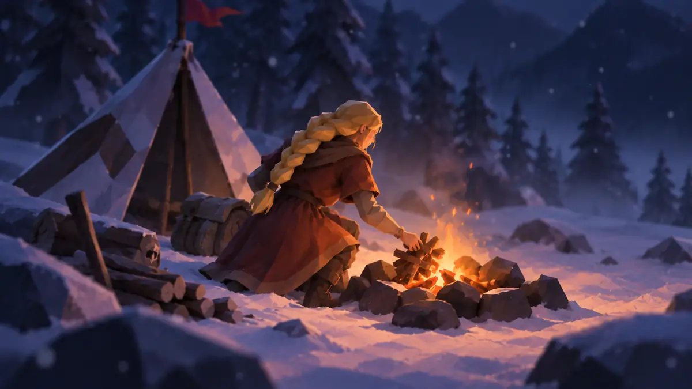
Fire
A fragile flame turns a clearing into shelter.
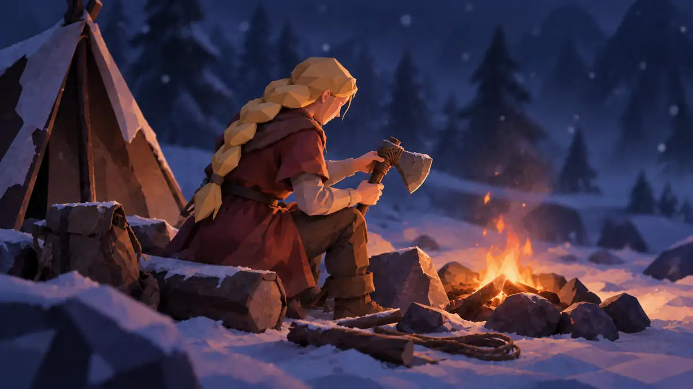
Craft
Stone and wood become a chance to last.
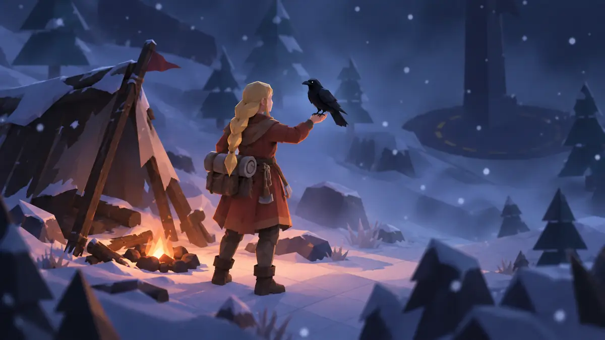
Scout
A raven lifts into the grey line where sea becomes sky.
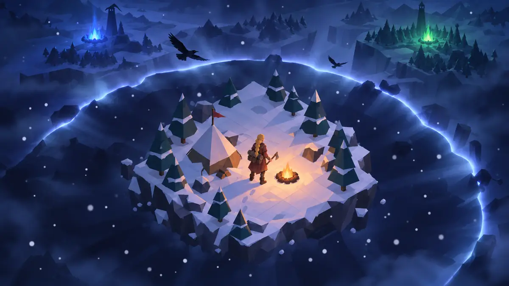
The Veil Lifts
The mist peels away. A wider world comes into view.
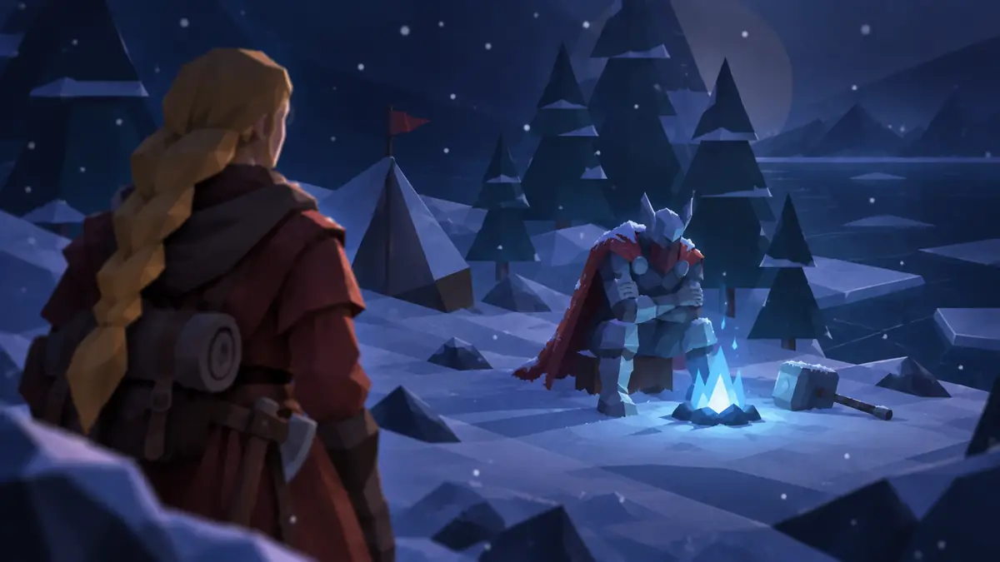
Across the Veil
Beyond the mist, another fire burns just as small.
First Light
Snow stops. At the edge of dawn, the embers catch again.
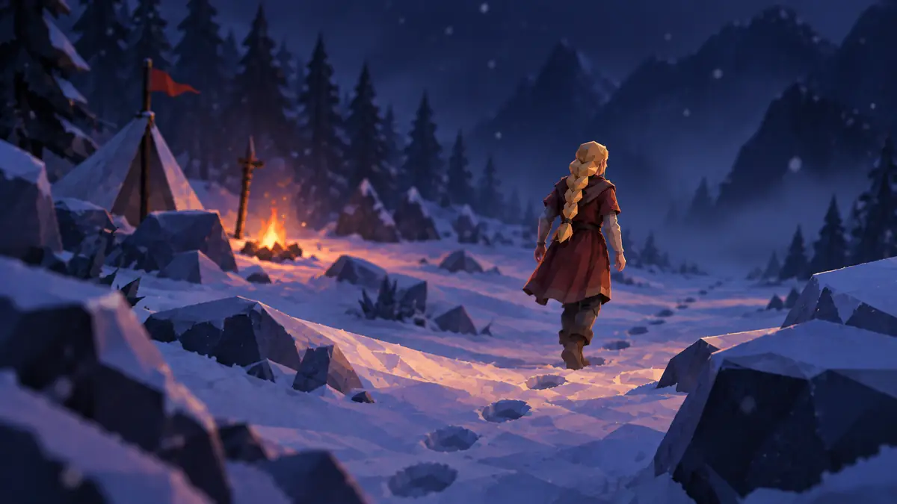
Walk On
One survivor walks beyond the camp and into the pass.
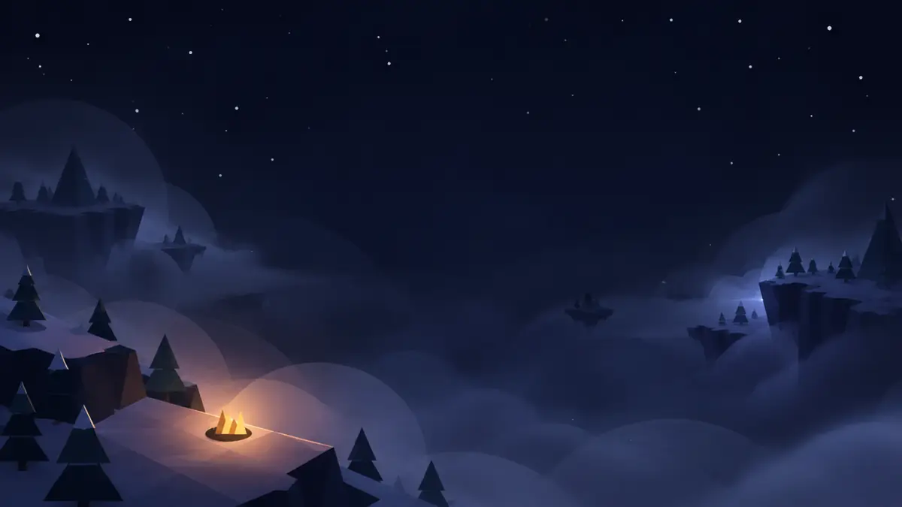
Far Shore
Across the Veil, another island waits.
A turn-based survival strategy game
Ironveil is an offline game against a rival bot. Gather, shelter and manage warmth as the island shifts through the seasons. Save a match on this device and return to it later.
Availability
Ironveil is in development. Store links and release details will appear only when confirmed.